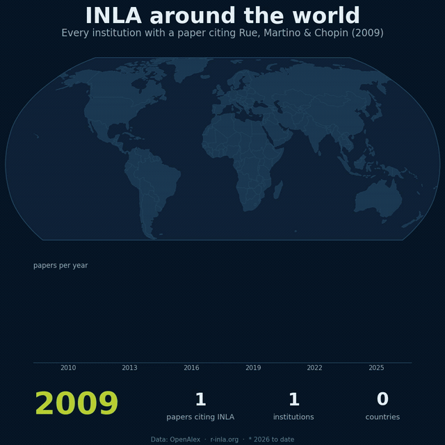

If This Were My Last Research Project
If this were my last research project, I would be at peace, and truly happy.
Here is why.
When I first started doing research and writing papers, my impression is that people care more about publishing, citations, and networking than about actual impact.
AI now makes this even easier. Writing papers faster. Implementing ideas faster. But if it is not driven by impact, it shows. If you see someone's name on ten papers in a single year, chances are they don't truly grasp what is happening in most of them. There are exceptions, of course, but they are few.
I do agree that networking (for the sake of more publishing) is one of the most powerful tools for building a strong profile. But I would argue even more strongly: publishing is not the same as impact.
I did not know I would end up doing sparse linear algebra with HPC for approximate Bayesian statistics. Yet here I am.
Over the last three years, I have been working on sTiles, a framework to accelerate INLA, one of the most powerful tools for approximate Bayesian inference. INLA is already reaching a wide base of users around the world.
Here is the scale of that community:
That is the community sTiles is built for.
Behind INLA, and much of scientific computing, sits one deceptively simple equation, solved thousands of times over:
AX = B
Depending on the problem, the matrix A can be almost empty (sparse), or completely full (dense). Today you choose your solver based on which one you have.
sTiles treats sparsity as a spectrum instead. One tile-based framework covers the entire range, from nearly empty to fully dense. Some papers are still coming. But the library is already there. And so is the integration with INLA.

2026 counts are to date. Data: OpenAlex · r-inla.org
Having the opportunity to build sTiles for that same global community is something I am truly proud of.